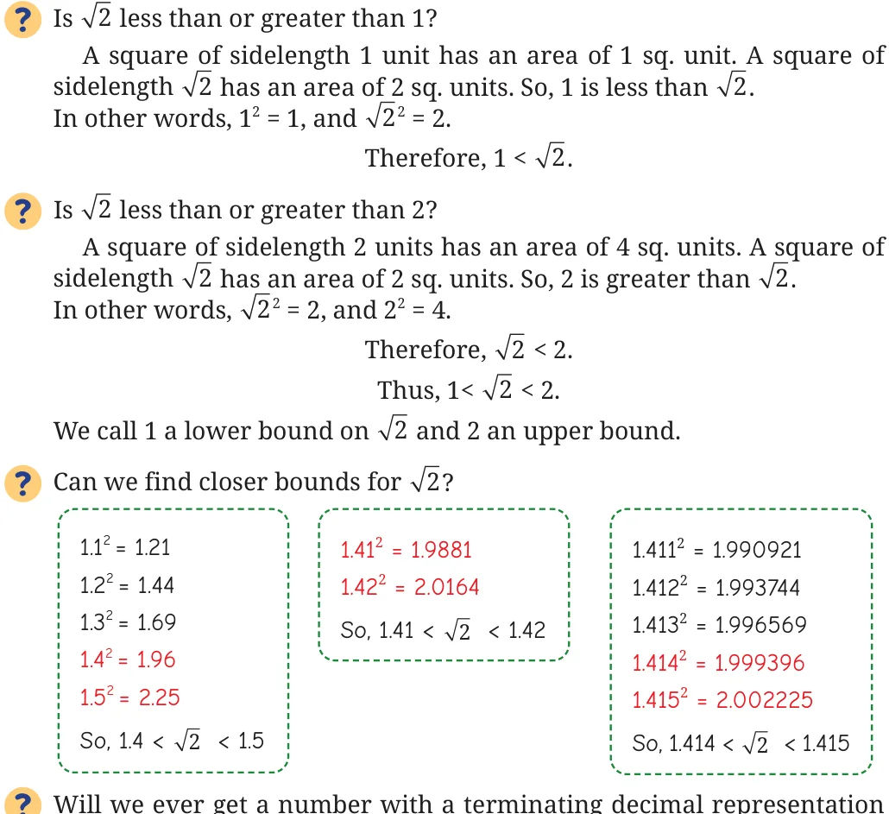

The decimal representation of 2 can be found using the following argument.

whose square is 2? If there is such a terminating decimal starting with 1.414… whose square is 2, then it must have a non-zero last digit. If this is the case, then the decimal representation of its square will also have a non-zero last digit after the decimal point. For example, if 2 is of the form 1.414…4, then its square will be of the form -
So a terminating decimal cannot have 2 or 2.000... as its square. Thus, the decimal expansion of 2 must go on forever, i.e., it has a non-terminating decimal representation.
Can 2 be expressed as a fraction \(\frac{m}{n}\) , where m and n are counting numbers? If 2 could be expressed as \(\frac{m}{n}\) , then we would have
\(2 = \frac{m}{n}\)
\(2 = _{2}\)
\(2n = m\) .
Recall that in the prime factorization of a square number, each prime
occurs an even number of times. So in the equation \(2n = m\) , the prime 2 would occur an odd number of times on the left side and an even number of times on the right side. This is impossible. Thus 2 cannot be expressed as a fraction \(\frac{m}{n}\) . This beautiful proof that 2 cannot be expressed as \(\frac{m}{n}\) where m, n are counting numbers was given by Euclid in his book Elements (c. 300 BCE). We will discuss it in more detail in a later class. Thus the number 2 cannot be expressed as a terminating decimal or a fraction. But we can think of it as a certain non-terminating decimal:
= 1.41421356…